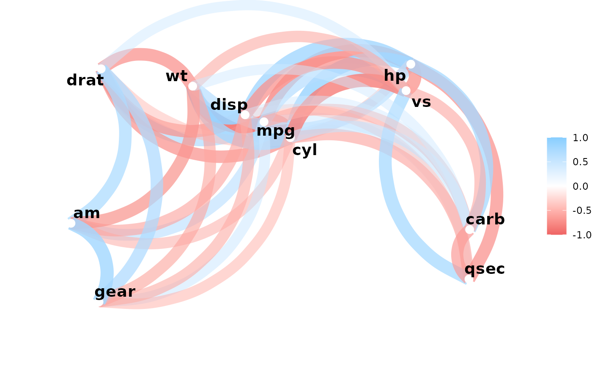
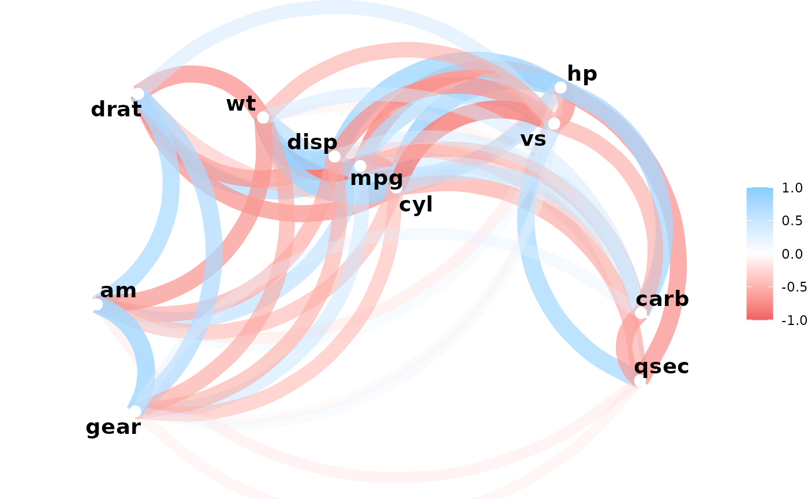
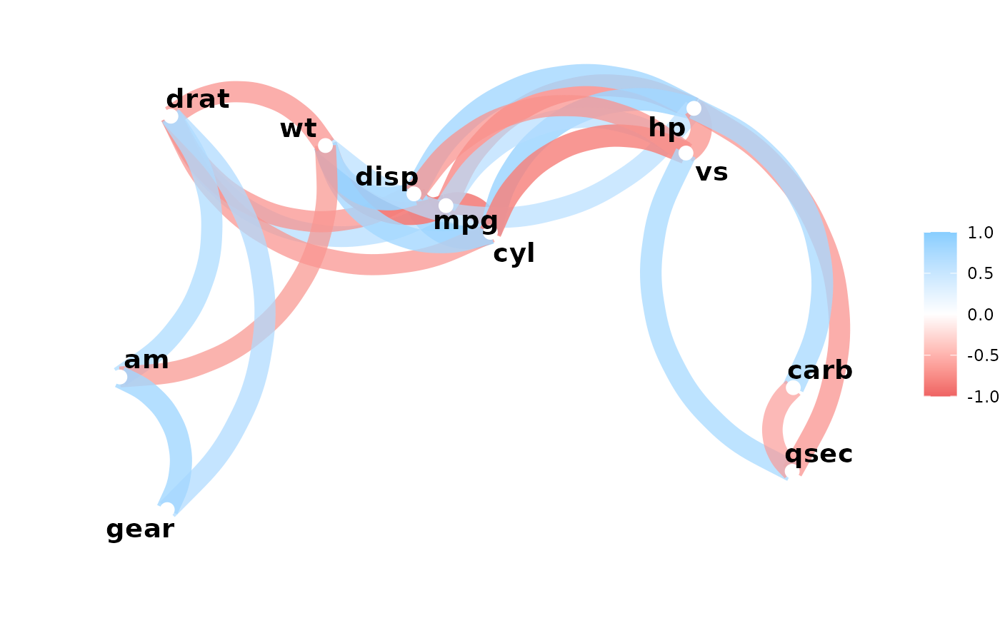

Output a network plot of a correlation data frame in which variables that are more highly correlated appear closer together and are joined by stronger paths. Paths are also colored by their sign (blue for positive and red for negative). The proximity of the points are determined using multidimensional clustering.
Arguments
- rdf
Correlation data frame (see
correlate) or object that can be coerced to one (seeas_cordf).- min_cor
Number from 0 to 1 indicating the minimum value of correlations (in absolute terms) to plot.
- legend
How should the colors and legend for the correlation values be displayed? The options are "full" (the default) for -1 to 1 with a legend, "range" for the range of correlation values in
rdfwith a legend, or "none" for colors between -1 to 1 with no legend displayed.- colours, colors
Vector of colors to use for n-color gradient.
- repel
Should variable labels repel each other? If TRUE, text is added via
geom_text_repelinstead ofgeom_text- curved
Should the paths be curved? If TRUE, paths are added via
geom_curve; if FALSE, viageom_segment
Examples
x <- correlate(mtcars)
#> Correlation computed with
#> • Method: 'pearson'
#> • Missing treated using: 'pairwise.complete.obs'
network_plot(x)

network_plot(x, min_cor = .1)

network_plot(x, min_cor = .6)

network_plot(x, min_cor = .7, colors = c("red", "green"), legend = TRUE)
#> Error in network_plot(x, min_cor = 0.7, colors = c("red", "green"), legend = TRUE): `legend` must be a character vector, not `TRUE`.